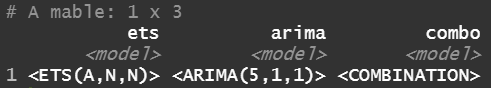

fable Package in RThe TSA data that we've pulled starts at 2019-01-05, so we're missing just four days of data. It would be very helpful to have a reasonable estimate for these four days if we want to give a summed number for January or full-year 2019. This is a perfect case where we can use backcasting to impute these missing values.
If you have any interest in forecasting, I highly recommend the fable package from Mitchell O'Hara-Wild, the great Rob Hyndman, and Earo Wang. It's the newest iteration of the well-known forecast package, and it plays well with the tidyverse. I also recommend the excellent book Forecasting: Principles and Practice by Rob Hyndman and George Athanasopoulos, which walks through fundamental forecasting principles using fable. In the last chapter of that book, they mention that fable can backcast if we need to predict what prior values were. They give the example code below. Let's walk through this backcasting process and show how we can apply this to our TSA data.
# Example code from Forecasting: Principles and Practice
backcasts <- auscafe %>%
mutate(reverse_time = rev(row_number())) %>%
update_tsibble(index = reverse_time) %>%
model(ets = ETS(Turnover ~ season(period = 12))) %>%
forecast(h = 15) %>%
mutate(Month = auscafe$Month[1] - (1:15)) %>%
as_fable(index = Month, response = "Turnover",
distribution = "Turnover")
backcasts %>%
autoplot(auscafe %>% filter(year(Month) < 1990)) +
labs(title = "Backcasts of Australian food expenditure",
y = "$ (billions)")
To start, we'll load the tidied TSA data.
# Data manipulation and visualization
library(readr)
library(dplyr)
library(ggplot2)
# Time series analysis
library(tsibble)
library(fable)
library(feasts)
# Read in data
df <- read_csv('../data/tsa.csv')
df <- df |> as_tsibble(index = Date)
The data looks like this after being loaded and converted to a tsibble:
# A tsibble: 1,212 x 2 [1D]
Date Passengers
1 2019-01-05 2345103
2 2019-01-06 2202111
3 2019-01-07 2150571
4 2019-01-08 1975947
5 2019-01-09 2229391
6 2019-01-10 2044043
7 2019-01-11 1733739
8 2019-01-12 1739642
9 2019-01-13 1955200
10 2019-01-14 1959788
# ... with 1,202 more rows
Our data starts at 2019-01-05, so we're missing the first four days of 2019.
We can use fable to create a reasonable forecast to fill in these missing dates.
First let's plot the original data through February 2020 to see how it looks. We can filter out anything after February 2020 because we don't want to include the Covid pandemic pattern in our forecast model training.
df |>
filter(Date <= '2020-02-29') |>
autoplot()
Right now the Date is the index in the tsibble. We'll need to create a new reversed index in order to forecast back in time.
Below we're using the dplyr::row_number() function to generate row numbers and then using the base::rev() function to reverse those numbers. The new field reverse_time shows this new reversed index.
df |>
# Remove Covid impact
filter(Date <= '2020-02-29') |>
# Create reverse index
mutate(reverse_time = rev(row_number()))
# A tsibble: 421 x 3 [1D]
Date Passengers reverse_time
1 2019-01-05 2345103 421
2 2019-01-06 2202111 420
3 2019-01-07 2150571 419
4 2019-01-08 1975947 418
5 2019-01-09 2229391 417
6 2019-01-10 2044043 416
7 2019-01-11 1733739 415
8 2019-01-12 1739642 414
9 2019-01-13 1955200 413
10 2019-01-14 1959788 412
# ... with 411 more rows
Now we can update our tsibble to use this new reversed_time field as the index. We can do this with the tsibble::update_tsibble() function. Now we see that the reverse_time field is in ascending order and the Date field is reversed.
df |>
# Remove Covid impact
filter(Date <= '2020-02-29') |>
# Create reverse index
mutate(reverse_time = rev(row_number())) |>
# Use new reverse index as tsibble index
update_tsibble(index = reverse_time)
# A tsibble: 421 x 3 [1]
Date Passengers reverse_time
1 2020-02-29 1949696 1
2 2020-02-28 2441643 2
3 2020-02-27 2364727 3
4 2020-02-26 2075554 4
5 2020-02-25 1919803 5
6 2020-02-24 2267382 6
7 2020-02-23 2380359 7
8 2020-02-22 1951535 8
9 2020-02-21 2429489 9
10 2020-02-20 2358511 10
# ... with 411 more rows
Let's plot the data again now that the index has been reversed. Comparing to the prior plot above, we can see that we've successfully reversed the data. In the plot below, the beginning (left) is February 2020 and the end (right) is January 2019.

Now we can proceed with creating our forecasts. We'll use the fable::ETS() and fable::ARIMA() functions for this. We'll then create a third, combined model that averages the output of both the ETS and ARIMA models. Hyndman and Athanasopoulos explain the process of combining forecasts here and note that it often improves accuracy. The ETS and ARIMA functions are finding the best fitting models to the data, and we will simply use the chosen model from each without any further scrutiny. Because we're just imputing four days of data, we don't need to spend more time on evaluating the model accuracy.
df |>
# Remove Covid impact
filter(Date <= '2020-02-29') |>
# Create reverse index
mutate(reverse_time = rev(row_number())) |>
# Use new reverse index as tsibble index
update_tsibble(index = reverse_time) |>
# Create ETS and ARIMA models from data
model(
ets = ETS(Passengers),
arima = ARIMA(Passengers, stepwise = FALSE, approximation = FALSE)
) |>
# Create combined model from both
mutate(combo = (ets + arima) / 2)
This results in the following mable (model table):
Now if we forecast 4 days using these models (forecast(h = 4)), we'll get the results below. It gives us the forecast distribution and mean for each day for each model.
# A fable: 12 x 4 [1]
# Key: .model [3]
.model reverse_time Passengers .mean
1 ets 422 N(2e+06, 5.4e+10) 2041333.
2 ets 423 N(2e+06, 5.5e+10) 2041333.
3 ets 424 N(2e+06, 5.6e+10) 2041333.
4 ets 425 N(2e+06, 5.7e+10) 2041333.
5 arima 422 N(2e+06, 3.9e+10) 2021572.
6 arima 423 N(2079099, 4.1e+10) 2079099.
7 arima 424 N(2173603, 4.1e+10) 2173603.
8 arima 425 N(2131355, 4.5e+10) 2131355.
9 combo 422 N(2e+06, 4.2e+10) 2031452.
10 combo 423 N(2060216, 4.4e+10) 2060216.
11 combo 424 N(2107468, 4.5e+10) 2107468.
12 combo 425 N(2086344, 4.7e+10) 2086344.
We have our forecasts using the reversed index, but now we need to reverse the index again back to the original Date in order to view these forecasts with the rest of the data. First we'll add a Date field back into our forecast results with mutate(Date = rep(df$Date[1] - c(1:4), 3)).
df$Date[1] gives the first date in our dataset: 2019-01-05df$Date[1] - c(1:4) subtracts 1, 2, 3, 4 days from our first date and thus gives the missing dates that we're predicting: [1] "2019-01-04" "2019-01-03" "2019-01-02" "2019-01-01"rep()) that list of missing dates 3 times because we have results from three models.
df |>
# Remove Covid impact
filter(Date <= '2020-02-29') |>
# Create reverse index
mutate(reverse_time = rev(row_number())) |>
# Use new reverse index as tsibble index
update_tsibble(index = reverse_time) |>
# Create ETS and ARIMA models from data
model(
ets = ETS(Passengers),
arima = ARIMA(Passengers, stepwise = FALSE, approximation = FALSE)
) |>
# Create combined model from both
mutate(combo = (ets + arima) / 2) |>
forecast(h = 4) |>
# Label newly forecasted data with proper historical dates
mutate(Date = rep(df$Date[1] - c(1:4), 3))
This adds the correct Date label into our forecast results:
# A fable: 12 x 5 [1]
# Key: .model [3]
.model reverse_time Passengers .mean Date
1 ets 422 N(2e+06, 5.4e+10) 2041333. 2019-01-04
2 ets 423 N(2e+06, 5.5e+10) 2041333. 2019-01-03
3 ets 424 N(2e+06, 5.6e+10) 2041333. 2019-01-02
4 ets 425 N(2e+06, 5.7e+10) 2041333. 2019-01-01
5 arima 422 N(2e+06, 3.9e+10) 2021572. 2019-01-04
6 arima 423 N(2079099, 4.1e+10) 2079099. 2019-01-03
7 arima 424 N(2173603, 4.1e+10) 2173603. 2019-01-02
8 arima 425 N(2131355, 4.5e+10) 2131355. 2019-01-01
9 combo 422 N(2e+06, 4.2e+10) 2031452. 2019-01-04
10 combo 423 N(2060216, 4.4e+10) 2060216. 2019-01-03
11 combo 424 N(2107468, 4.5e+10) 2107468. 2019-01-02
12 combo 425 N(2086344, 4.7e+10) 2086344. 2019-01-01
Finally we can reindex these forecast values with fabletools::as_fable(). We specify that the index should be Date and that the response and distribution are Passengers.
df |>
# Remove Covid impact
filter(Date <= '2020-02-29') |>
# Create reverse index
mutate(reverse_time = rev(row_number())) |>
# Use new reverse index as tsibble index
update_tsibble(index = reverse_time) |>
# Create ETS and ARIMA models from data
model(
ets = ETS(Passengers),
arima = ARIMA(Passengers, stepwise = FALSE, approximation = FALSE)
) |>
# Create combined model from both
mutate(combo = (ets + arima) / 2) |>
forecast(h = 4) |>
# Label newly forecasted data with proper historical dates
mutate(Date = rep(df$Date[1] - c(1:4), 3)) |>
# Reindex forecast results to use Date like the original data
as_fable(index = Date, response = 'Passengers', distribution = 'Passengers')
We get the results below. This looks very similar to the results we just saw, but now the data is sorted by Date because that is the new index.
# A fable: 12 x 5 [1D]
# Key: .model [3]
.model reverse_time Passengers .mean Date
1 arima 425 N(2131355, 4.5e+10) 2131355. 2019-01-01
2 arima 424 N(2173603, 4.1e+10) 2173603. 2019-01-02
3 arima 423 N(2079099, 4.1e+10) 2079099. 2019-01-03
4 arima 422 N(2e+06, 3.9e+10) 2021572. 2019-01-04
5 combo 425 N(2086344, 4.7e+10) 2086344. 2019-01-01
6 combo 424 N(2107468, 4.5e+10) 2107468. 2019-01-02
7 combo 423 N(2060216, 4.4e+10) 2060216. 2019-01-03
8 combo 422 N(2e+06, 4.2e+10) 2031452. 2019-01-04
9 ets 425 N(2e+06, 5.7e+10) 2041333. 2019-01-01
10 ets 424 N(2e+06, 5.6e+10) 2041333. 2019-01-02
11 ets 423 N(2e+06, 5.5e+10) 2041333. 2019-01-03
12 ets 422 N(2e+06, 5.4e+10) 2041333. 2019-01-04
We'll store these forecast results and plot them to see how they compare. The ARIMA model forecast shows daily fluctation while the ETS model forecast is flat.The combo model is just the average of the two, so it's right in the middle.
# Plot backcasts with original data
autoplot(fcst, df |> filter(Date <= '2019-03-01')) +
labs(title = 'Backcasts')
Given that forecast combinations often outperform individual models, let's use the combination model. We can select the mean values from the combo forecast and append them to our original data so that we have a complete dataset with these missing values filled in.
# Combine original data and forecast
fcst <- fcst |>
filter(.model == 'combo') |>
as_tibble() |>
select(Date, .mean) |>
rename(Passengers = .mean)
df <- bind_rows(df, fcst)
Our dataset now has complete data from the beginning of 2019!
# A tsibble: 1,216 x 2 [1D]
Date Passengers
1 2019-01-01 2086344.
2 2019-01-02 2107468.
3 2019-01-03 2060216.
4 2019-01-04 2031452.
5 2019-01-05 2345103
6 2019-01-06 2202111
7 2019-01-07 2150571
8 2019-01-08 1975947
9 2019-01-09 2229391
10 2019-01-10 2044043
# ... with 1,206 more rows
Now here is the complete code:
# Data manipulation and visualization
library(readr)
library(dplyr)
library(ggplot2)
# Time series analysis
library(tsibble)
library(fable)
library(feasts)
# Read in data
df <- read_csv('../data/tsa.csv')
df <- df |> as_tsibble(index = Date)
# Backcasting
fcst <- df |>
# Remove Covid impact
filter(Date <= '2020-02-29') |>
# Create reverse index
mutate(reverse_time = rev(row_number())) |>
# Use new reverse index as tsibble index
update_tsibble(index = reverse_time) |>
# Create ETS and ARIMA models from data
model(
ets = ETS(Passengers),
arima = ARIMA(Passengers, stepwise = FALSE, approximation = FALSE)
) |>
# Create combined model from both
mutate(combo = (ets + arima) / 2) |>
forecast(h = 4) |>
# Label newly forecasted data with proper historical dates
mutate(Date = rep(df$Date[1] - c(1:4), 3)) |>
# Reindex forecast results to use Date like the original data
as_fable(index = Date, response = 'Passengers', distribution = 'Passengers')
# Plot backcasts with original data
autoplot(fcst, df |> filter(Date <= '2019-03-01')) +
labs(title = 'Backcasts')
# Combine original data and forecast
fcst <- fcst |>
filter(.model == 'combo') |>
as_tibble() |>
select(Date, .mean) |>
rename(Passengers = .mean)
df <- bind_rows(df, fcst)
# Save data
write_csv(df, '../data/tsa-backcast.csv')